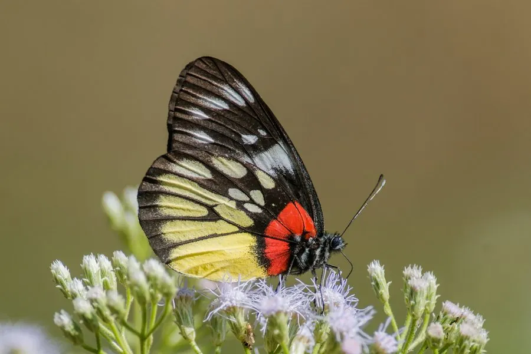

昆虫 · 动物界
报喜斑粉蝶 Delias pasithoe

中国南方常见的粉蝶，翅背黑底缀红黄斑，翅腹面颜色鲜艳，因常在花间飞舞、体色喜庆而得名“报喜斑粉蝶”。
- 分类
- 门节肢动物门纲昆虫纲目鳞翅目科粉蝶科属斑粉蝶属
- 栖息环境
- 低山丘陵的森林、灌丛、公园、花园与溪边
- 地理分布
- 印度、东南亚及中国南方地区
- 保护级别
- IUCN 暂无评估；中国未列入国家重点保护名录
物种志
报喜斑粉蝶翅展 6–8 厘米，翅面以黑色为底，前翅和后翅分布着红、黄、白相间的斑块与条纹，翅反面的色彩同样鲜艳，红黄斑纹在绿色背景中十分醒目；雌蝶通常比雄蝶略大，斑纹也更丰富。它飞行轻盈，常在花丛、林缘和灌丛间飞舞。
它分布于印度、东南亚以及中国南方，栖息于低山和丘陵的森林、灌丛、公园与花园，成虫访花吸蜜，也喜欢在湿润的溪边吸水；幼虫取食桑寄生科植物，是少数以寄生植物为食的粉蝶之一。雌蝶在寄主植物上产卵，幼虫群集取食，化蛹后挂在枝叶间。它在中国南方一年多代，常见于春夏季，因体色喜庆而被民间视为“报喜”的象征；目前种群较稳定，未被列入国家重点保护名录。
形态与习性
- 食性成虫吸食花蜜，幼虫取食桑寄生科植物
- 翅展6–8 cm
- 寿命成虫约 2–3 周
- 繁殖卵生，幼虫群集取食后化蛹
- 活动节律昼行性
- 特点翅面黑底红黄斑，翅腹面同样鲜艳
趣味知识
- 报喜斑粉蝶的翅背和翅腹面都有鲜艳的红黄斑纹，在花丛中十分醒目。
- 它的幼虫以桑寄生科植物为食，这在粉蝶中比较少见。
- 因体色喜庆、常见于春夏花间，民间把它叫作“报喜斑粉蝶”。